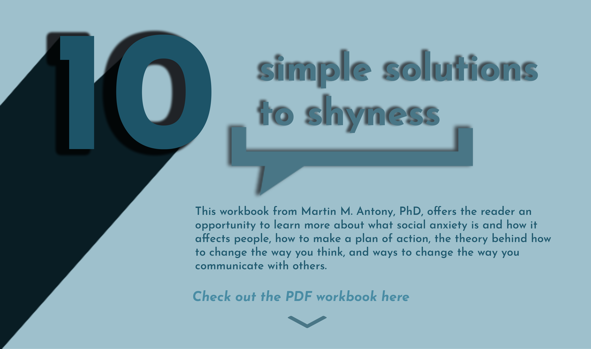
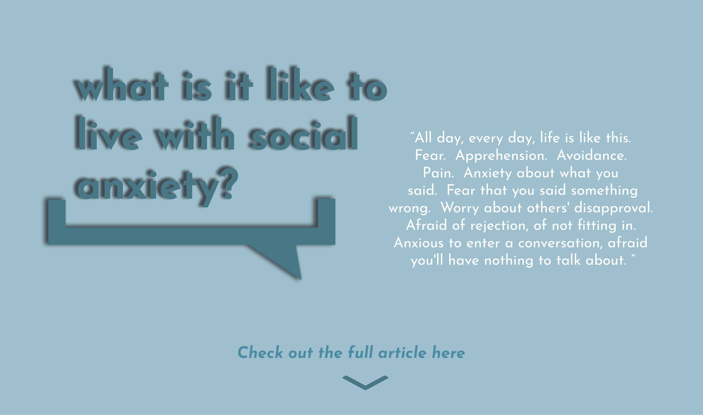
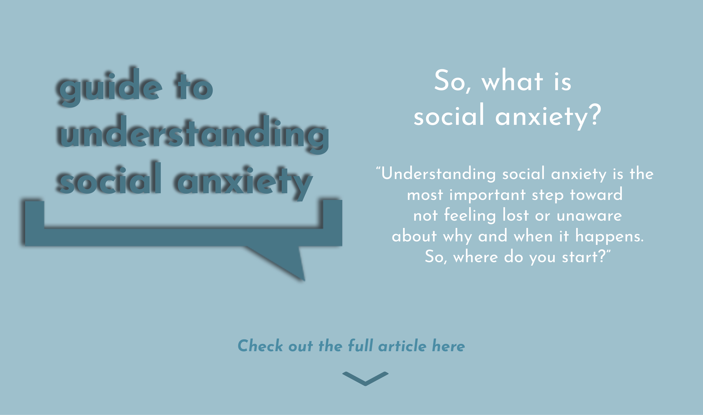
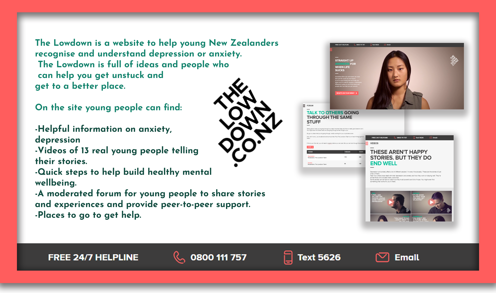

Like any mental illness, social anxiety isn't always easy to understand. It isn't the same for everyone. It's always good to learn about what could be affecting yourself or others. Here are some useful videos, websites and articles to get you started.
A short film by Kat Napiorkowska, a filmmaker based in Poland. Her short film "Living with social anxiety" gives an introspective view on what one may experience when affect by social anxiety. To check out more of her videos, go to her Youtube channel: Kat Napiorkowska
"There is still a lot of stigma attached to social anxiety, so Psych2Go wants to shed light on what it is really like to have social anxiety. Here are 5 Things About Social Anxiety No One Talks About! If you are socially anxious, you may literally feel sick, undeserving of happiness, and lonely." To check out more of their videos, go to the Psych2Go Youtube channel: Psych2Go